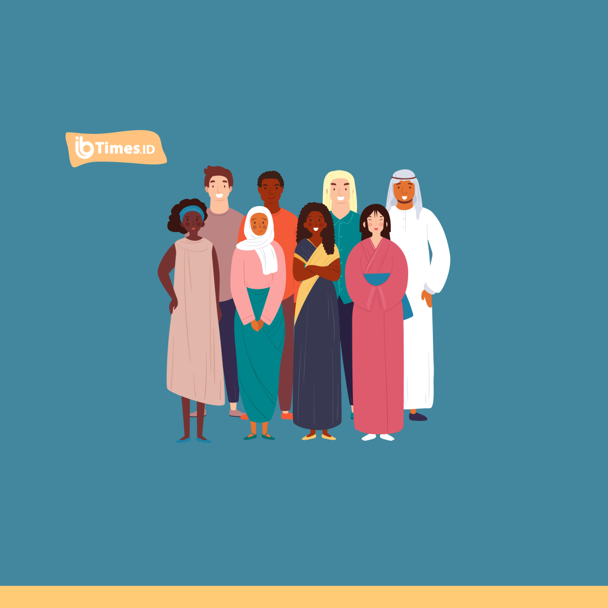

Etika Beragama
Teologi Agama-Agama dan Sosiologi Agama
Studi sosiologi agama-agama merupakan studi tentang hubungan-hubungan antara agama dan masyarakat serta bentuk-bentuk hubungan yang terjadi. Hal-hal yang menjadi perhatian dari studi ini adalah bagaimana kepercayaan-kepercayaan agama tertentu memengaruhi suatu masyarakat, atau bagaimana kepercayaan agama tertentu memengaruhi pola hubungan dengan umat beragama lain. Dalam bidang ini, yang menjadi objek penelitian adalah aspek manusiawi (imanen), yang mana aspek Ilahi (transendensi) diwujudkan di dalam perilaku manusia sehari-hari. Akan tetapi, hal-hal yang transenden tidak terlalu diperhatikan atau dikesampingkan di dalam studi ini. Teologi agama-agama juga mempelajari aspek manusiawi dan aspek Ilahi di dalam agama-agama. Akan tetapi, teologi agama-agama justru lebih tertarik untuk mempelajari aspek Ilahi yang memengaruhi perilaku sehari-hari, dalam hal ini antara umat Kristen terhadap umat beragama yang lain.
Tujuan
Dengan adanya etika dalam beragama dimasa sekarang agar memberi kedamaian untuk menjalin hubungan yang harmonis dan kerukunan bagi pemeluk agama, menjadikan hidup damai tanpa adanya perseteruan antar umat beragama salah satunya kepedulian, toleransi, menghormati, kebaikan, dan menghargai kesetaraan dalam pengamalan ajaran umat beragama, menjadikan masyarakat untuk saling bergotong royong dalam kehidupan sehari-hari agar bisa hidup berdampingan tanpa adanya perbedaan, Sedangkan tujuannya adalah tercapai hubungan sesama umat beragama yang rukun, damai dan tentram, antar budaya tanpa adanya keceburuan sosial antar umat beragama.